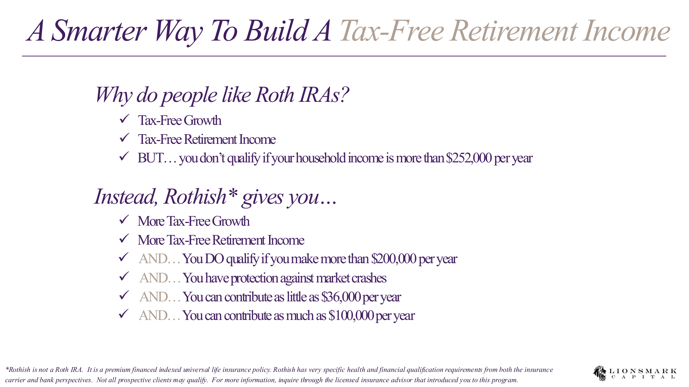
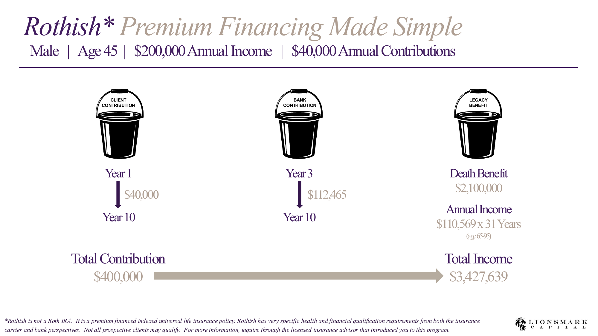
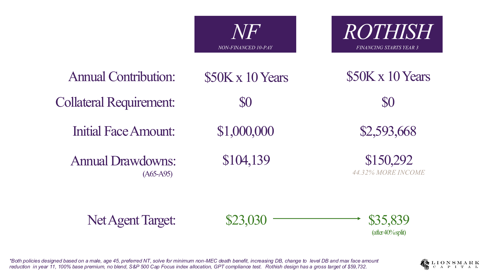
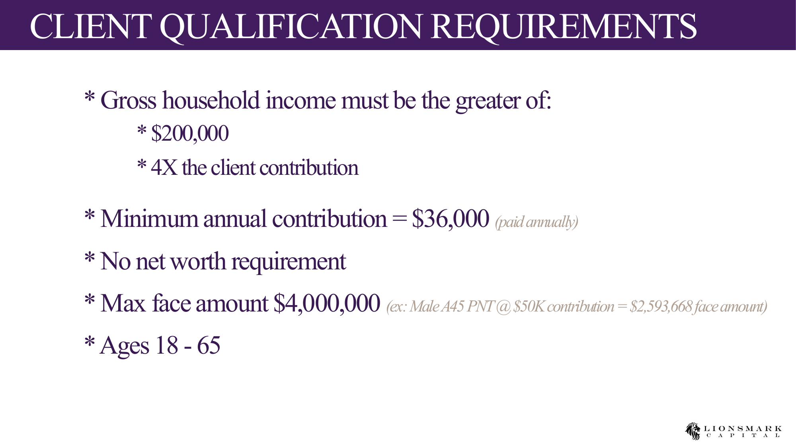

1 为什么是"类 Roth"
Roth 很好，但高收入家庭常常用不了
大家喜欢 Roth IRA 的三点：免税增长、免税退休收入、没有 RMD。但家庭收入超过约 $252,000 就不再符合资格——这恰恰把大量硅谷科技家庭挡在门外。
Rothish 想解决的就是这件事：在保留"免税增长 + 免税退休收入"的同时，收入超过 $200,000 也能参与，并且额外获得 0% 市场下行保护，年供款可低至 $36,000、高至 $100,000。

2 它到底是什么
本质：一份"保费融资"的指数型万能寿险
必须讲清楚——Rothish 不是 Roth IRA，而是一份保费融资（premium-financed）的指数型万能寿险保单。结构上：客户出一部分保费，银行融资其余部分；保单价值作为抵押；第 11 年还清贷款，第 12 年起即可开始领取免税收入。
示例（男性 45 岁、年收入 $200,000、年供 $40,000）：客户十年共投入 $40 万，最终可获得 约 $343 万 的累计免税收入（65–95 岁，每年约 $11 万 × 31 年），外加约 $210 万 身故赔偿。

3 为什么用融资
同样的供款，更多的免税收入
"融资"不是为了花哨，而是为了用银行的钱放大保单的现金价值与未来可领取的免税收入。和同等供款的非融资 IUL 相比，Rothish 的初始保额更高、年度可领取额更高——示例里多出约 44% 的收入。

4 谁适合
资格要求一目了然
- 家庭总收入 ≥ $200,000，或 ≥ 客户供款的 4 倍（取较大者）。
- 最低年供 $36,000（按年缴付）。
- 无净资产门槛；最高保额 $4,000,000。
- 年龄 18–65 岁；可个人持有，亦可由 LLC / S-corp / 信托持有。

Key Takeaways
三句话记住 Rothish
- 定位：给收入超过 Roth 门槛的高收入家庭，做一个"类 Roth"的免税退休现金流。
- 机制：保费融资的 IUL——客户出一部分、银行融资一部分，第 11 年还贷、第 12 年起领取。
- 优势：相比非融资 IUL，同样供款可换来明显更多的免税收入，并带 0% 下行保护。
⚠️ 仅供教育用途，非税务/法律/投资建议。Rothish 不是 Roth IRA，而是保费融资的指数型万能寿险，受保险公司与银行两端的健康及财务核保要求约束，并非所有人都符合资格；实际数字依保单illustration与个人情况而定。